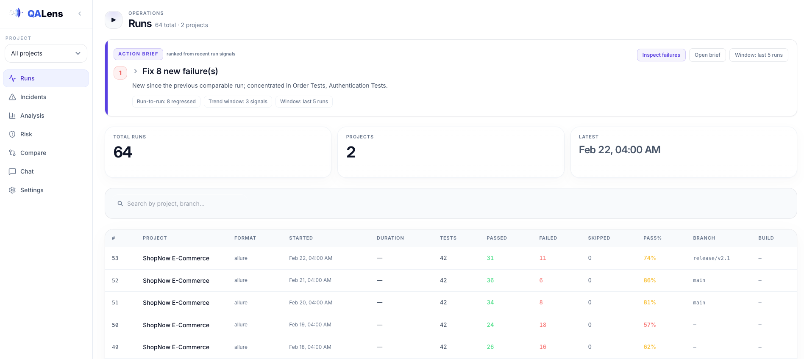

The questions static reports leave unanswered.
QA Lens is built around the triage questions teams ask after every run, before they know which failure deserves attention.
From raw reports to ranked intelligence.
Keep your existing test stack. Add the intelligence layer.
QA Lens is not a test runner and does not replace Allure, Extent, Playwright, Cypress, JUnit, or TestNG. It reads the reports those tools already produce, stores normalized results in SQLite, and layers analysis on top.
- Works from generated HTML, XML, and JSON report artifacts.
- Keeps run history in a lightweight local SQLite database.
- Does not execute tests or replace the report viewer your team already uses.
Supported inputs from your CI.
QA Lens normalizes report artifacts from the formats your automation stack already emits.
Every view answers the next QA question.
Move from run history to incident detail, risk prediction, comparison, and natural-language investigation without exporting spreadsheets.

Built like infrastructure, not a dashboard toy.
The product posture is simple: keep private QA data local, make the analysis explainable, and integrate with the report formats teams already have.
Local-first web server
By default, `qalens serve` binds to `127.0.0.1` and requires no login for local use.
SQLite-backed history
The database is a standard SQLite file that can be copied, backed up, and reused across CLI and web workflows.
Deterministic first
Classification, clustering, comparison, risk scoring, flakiness, trends, reports, and many questions work without an LLM.
LLM opt-in
QA Lens does not ship an LLM. Cloud providers are disabled unless explicitly allowed.
Untrusted report safety
Security defaults include file type validation, raster image validation, SVG rejection, and secret redaction before LLM submission.
Shareable outputs
Generate standalone HTML, Markdown, and JSON reports when a release review needs more than a dashboard tab.
Open the demo, then point it at your reports.
Use the hosted sample to inspect the product feel, or run the local command path when you want to analyze private CI artifacts.